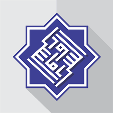

Pesantren Modern Assuruur didirikan dengan semangat mencetak santri yang mampu menyeimbangkan antara ilmu agama dan ilmu umum.
Nama Assuruur diambil dari bahasa Arab yang berarti "Kebahagiaan", mencerminkan harapan agar proses belajar di pesantren selalu dilandasi dengan kegembiraan dan keikhlasan.
